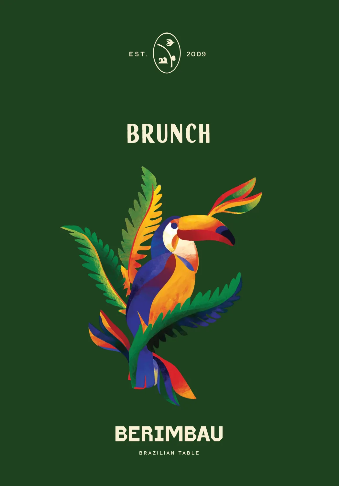
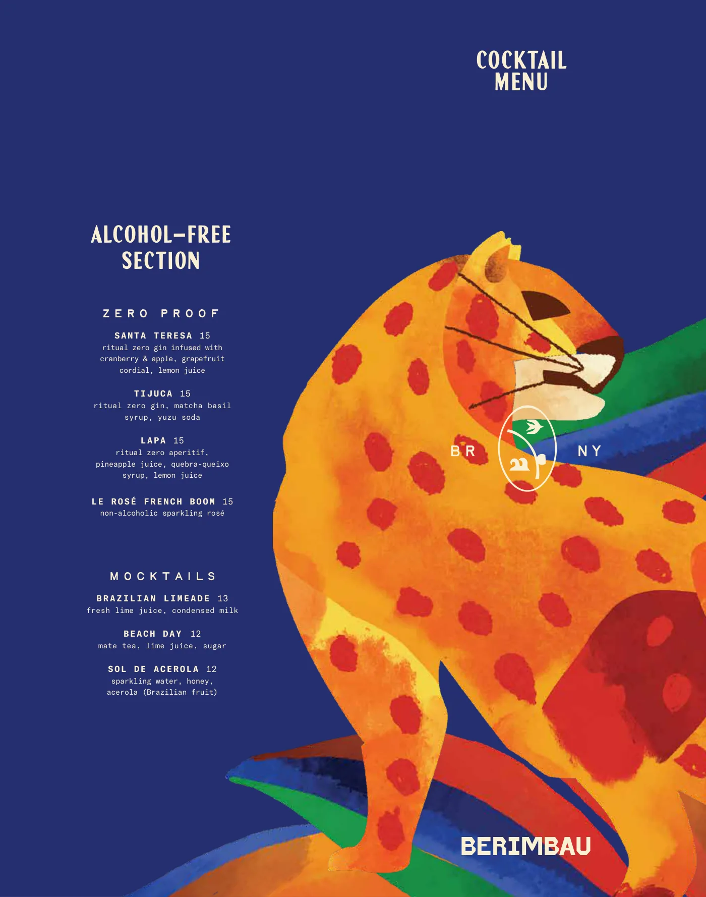

O tracklist completo
Todasas faixas
Legível no celular, com busca, em dois idiomas, lado a lado. Preços exatamente como publicados pelo restaurante. Monte a setlist da sua mesa enquanto lê.
Jantar
PDF oficial com alérgenos ↗
Para a mesa
- B1 Pão de Queijopão de queijo brasileiro sem glútenassado na hora, aguarde de 15 a 20 minutos · adicione dip: goiabada e stracciatella 5 11
- B2 Crudo de Vieiravieiras, aguachile de goiaba, romã, pepino, hortelã, azeite verde 24
- B3 Coxinhacoxinha de frango, catupiry, molho de pimenta malagueta5 un. 17
- B4 Cevichetruta do mar, maracujá, pimenta biquinho, palmito, rabanete 24
- B5 Dadinhodadinho de tapioca, queijo coalho, molho agridoce de pimenta 16
- B6 Mandioca da Casamandioca frita, cebola caramelizada, lascas de parmesão 17
- B7 Pastelpastel brasileiro (recheio do dia)2 un. 13
- B8 BroccoliniVchalotas assadas, farofa de alho e cebola, aioli de tofu e tucupi 18
- B9 Cogumelocogumelo-ostra, tucupi preto, chimichurri, castanha-do-pará 15
- B10 Steak Tartarefilé cortado na faca, aioli da casa, gema curada, tapioca 24
Saladas
- B11 Salada TropicáliaVmix de folhas, morango, lâminas de erva-doce, quinoa, vinagrete de ruibarbo 18
- B12 Berimbau Caesaralface baby gem, cracker de dadinho, lascas de parmesão, molho de abacate 17
- B13 Tomatetomate heirloom, abacate, pimenta cumari, manjericão, endro, croutons de focaccia 19
Principais
- B14 Arroz de Camarãocaju caramelizado, chuchu, rabanete, aioli de polvo 42
- B15 Galetofrango orgânico, purê de mandioquinha, frisée, farofa de milho 29
- B16 Rigatoni à la Cachaçapolvo, molho de tomate e cachaça, queijo coalho 36
- B17 Bife a Cavalocontrafilé prime NY strip, ovo orgânico e fritas, molho de ervas 52
- B18 Secreto Pork Cutpurê de feijão vermelho, salada de ervas, tomate heirloom, farofa de milho, arroz 32
- B19 Bacalhau Negroblack cod, leite de coco, gengibre, tomates, espaguete de palmito 39
Favoritos brasileiros
- B20 Picanha Feastpicanha elite prime de 38oz, arroz frito com bacon e ovo, espinafre cremoso, farofa de milho, vinagreteserve 3 pessoas 149
- B21 Strogonofffilé-mignon, cogumelos, molho de creme e tomate, arroz, batata palha 34
- B22 Feijoadafeijão-preto, cortes suínos defumados, carne-seca, couve, arroz, farofa de bacon 36
- B23 Moquecahalibute, camarão, lula, mexilhões, caldo de leite de coco e dendê, arroz, farofa de dendê 42
Principais veganos
- B24 Moqueca VeganaVbanana-da-terra, quiabo, tucupi, caldo de leite de coco e dendê, arroz, farofa 32
- B25 Feijoada VeganaVfeijão-preto, legumes do dia, tofu, arroz, farofa de milho 29
Almoço
PDF oficial com alérgenos ↗Para a mesa
- B1 Pão de Queijopão de queijo brasileiro sem glútenadicione dip: stracciatella e goiabada 5 11
- B2 Pastelpastel brasileiro (recheio do dia)2 un. 13
- B3 Coxinhacoxinha de frango, molho picante Berimbau3 un. 12
- B4 Dadinhodadinho de tapioca, queijo coalho, molho agridoce de pimenta 15
- B5 BroccoliniVchalotas assadas, farofa de alho e cebola, aioli de tofu e tucupi 17
- B6 Berimbau Caesaralface baby gem, cracker de dadinho, lascas de parmesão, molho de abacate 16
Favoritos brasileiros
- B7 Picanha Experiencepicanha elite prime, broccolini, arroz, feijão-preto, farofa, salada e fritas, com dadinho de tapioca e pastel de queijoserve 2 pessoas 75
- B8 Strogonoff Platefilé-mignon, cogumelos, molho de creme e tomate, arroz, batata palha, rúcula 27
- B9 Feijoada Platefeijão-preto, cortes suínos defumados, carne-seca, couve, arroz, farofa de bacon 25
- B10 Moqueca de Camarão Platecamarão, caldo de leite de coco e dendê, arroz, farofa de dendê 29
Principais
- B11 Steak Saladrosbife de picanha, rúcula e frisée, tomate, pepino, cebola roxa, chips de batata da casa 25
- B12 Milanesapeito de frango empanado, baby gem, radicchio, laranja, frisée, aioli verde 25
- B13 Rigatoni à la Cachaçatomate, creme fresco, stracciatella, molho de cachaça de amburana, tuile de queijo coalho 24
- B14 Galinhadaarroz tradicional com frango, milho grelhado, quiabo, aioli de pimenta brasileira 27
- B15 Picanha Burguercebolas caramelizadas no tabasco, queijo, fritas 25
- B16 Vegan Moqueca PlateVbanana-da-terra, quiabo, tucupi, caldo de coco e dendê, arroz, farofa de dendê 25
- B17 Vegan Feijoada PlateVfeijão-preto, legumes do dia, tofu, arroz, farofa de milho 24
Para começarescolha um
- B1 Pão de Queijoadicione dip de stracciatella e goiabada +5
- B2 Pastel
- B3 Caesar Salad
- B4 Broccolini
Pratoescolha um
- B5 Feijoada Plate
- B6 Steak Salad
- B7 Strogonoff Plate
- B8 Galinhada
Adicione sobremesa +8
- B9 Pudim de Café com Leite
- B10 Romeu & Julieta
- B11 Brigadeiro
Brunch
PDF oficial com alérgenos ↗
Para a mesa
- B1 Pão de Queijopão de queijo brasileiro sem glútenadicione dip: goiabada e stracciatella 5 11
- B2 Crudo de Vieiravieiras, aguachile de goiaba, romã, pepino, hortelã, azeite verde 24
- B3 Coxinhacoxinha de frango, catupiry, molho de pimenta malagueta5 un. 17
- B4 Cevichetruta do mar, maracujá, pimenta biquinho, palmito, rabanete 24
- B5 Dadinhodadinho de tapioca, queijo coalho, molho agridoce de pimenta 16
- B6 Mandioca da Casamandioca frita, cebola caramelizada, lascas de parmesão 17
- B7 Pastelpastel brasileiro (recheio do dia)2 un. 13
- B8 BroccoliniVchalotas assadas, farofa de alho e cebola, aioli de tofu e tucupi 18
- B9 Steak Tartarefilé cortado na faca, aioli da casa, gema curada, tapioca 24
Saladas
- B10 Salada TropicáliaVmix de folhas, morango, manga seca, lâminas de erva-doce, quinoa, vinagrete de ruibarbo 18
- B11 Berimbau Caesaralface baby gem, cracker de dadinho, lascas de parmesão, molho de abacate 17
- B12 Tomatetomate heirloom, abacate, pimenta cumari, manjericão, endro, croutons de focaccia 19
Principais
- B13 Rigatoni à la Cachaçatomate, creme fresco, stracciatella, molho de cachaça de amburana, tuile de queijo coalho 24
- B14 Pão de Queijo Wafflefrango frito, stracciatella, goiabada picante, salada de agriãoadicione ovo +3 25
- B15 Shrimp Omeletteovos orgânicos, camarão, baby gem, radicchio, laranja, endívia, molho de missô 23
- B16 Picanha Burgercebolas caramelizadas no tabasco, cheddar, brioche, salada e fritas 28
- B17 Bacalhau Hashbacalhau, hash brown, cebola, broccolini, ovo com gema mole 26
- B18 Açaí BowlVaçaí orgânico, banana, morangos, granola vegana e sem glúten da casa 19
Favoritos brasileiros
- B19 Picanha Feastcorte de picanha elite prime de 38oz, arroz frito com bacon e ovo, fritas cortadas à mão, salada, chimichurriserve 3 pessoas 149
- B20 Strogonofffilé-mignon, cogumelos, molho de creme e tomate, arroz, batata palha 34
- B21 Feijoadafeijão-preto, cortes suínos defumados, carne-seca, couve, arroz, farofa de bacon 36
- B22 Moquecahalibute, camarão, lula, mexilhões, caldo de leite de coco e dendê, arroz, farofa de dendê 42
- B23 Picadinhocarne braseada, cogumelo, cebola roxa, tomate, farofa de milho, ovo pochê, banana frita, arroz 38
Principais veganos
- B24 Moqueca VeganaVbanana-da-terra, quiabo, tucupi, caldo de leite de coco e dendê, arroz, farofa 32
- B25 Feijoada VeganaVfeijão-preto, legumes do dia, tofu, arroz, farofa de milho 29
Sobremesas
PDF oficial com alérgenos ↗Sobremesas
- B1 Bolo de MandiocaVbolo de mandioca caramelizado, lascas de coco, creme de cupuaçu 13
- B2 Romeu & Julietacheesecake de goiabada, tuile de queijo, geleia de goiaba, raspas de limão 15
- B3 Pudim de Café com Leitepudim de café, caramelo, pão com manteiga 12
- B4 Cacau & Cajuchocolate amargo, sorbet de caju, crumble de cacau, mel 15
- B5 Brigadeirotrufa brasileira de chocolate 12
Digestivos
- B6 Grand Marnier 14
- B7 Fernet Branca 14
- B8 Sambuca White 14
- B9 Amaretto Disaronno 14
- B10 Port Winevinho do Porto 14
- B11 Licor 43 14
- B12 Limoncello 14
- B13 Amaro Nonino 14
Café e chá
- B14 Macchiato 6
- B15 Cappuccino 6
- B16 Americano 4
- B17 Espresso 4
- B18 Teachá 5
Coquetéis
PDF oficial com alérgenos ↗
Caipirinha Bar
- B1 Caipirinhacachaça leblon premium, escolha entre limão clássico, manga, goiaba ou cajucaipivodka grey goose +3 17
- B2 Brazilian Passioncachaça magnífica premium, maracujá, suco de limão 19
- B3 Caipiritacachaça leblon premium, suco de limão, pimenta serrano 18
- B4 Jangadacachaça jambuzera, cajá, mel 20
- B5 Rabo de Galocachaça envelhecida magnífica xp, vermute doce, cynar, bitter de laranja 22
Clássicos Berimbau
- B6 Arpoadortequila patrón añejo picante, limão, maracujá chinola, espuma de acerola e hibisco 22
- B7 Bicagrey goose lemon, espresso fresco, pistache, cold brew mr. black 20
- B8 Neblinatequila mijenta blanco, suco de limão, ginger beer, espuma de maracujá e manga, agave 21
- B9 Saudadecachaça conde do sul amburana, xarope de quebra-queixo, bitter de cardamomo, espuma de caju e lichia 23
- B10 Nosso Fashionedbourbon elijah craig, caramelo de banana, bitter angostura 24
- B11 Nico's Heartmezcal montelobos, aperol, purê de maracujá, suco de limãoinspirado em nosso querido boston terrier, Nico 21
Especiais da estação
- B12 Paratycachaça conde do sul amburana, cordial de tangerina, cumaru, suco de limão, bitter de cardamomo 23
- B13 Jerigrey goose lemon, melão, st-germain, soda de yuzu 21
- B14 Trancosobourbon elijah craig, coco e caju com açúcar mascavo, bitter de laranja 23
- B15 Pipamezcal madre infusionado com louro, manjericão, limonada de gengibre, bitter de endro 21
- B16 Ubatubagin bombay, coentro, cordial de graviola 22
Zero álcool
- B17 Santa Teresagin ritual zero infusionado com cranberry e maçã, cordial de grapefruit, suco de limão 15
- B18 Tijucagin ritual zero, xarope de matcha e manjericão, soda de yuzu 15
- B19 Lapaaperitivo ritual zero, suco de abacaxi, xarope de quebra-queixo, suco de limão 15
- B20 Le Rosé French Boomrosé espumante sem álcool 15
Mocktails
- B21 Brazilian Limeadesuco de limão fresco, leite condensado 13
- B22 Beach Daychá-mate, suco de limão, açúcar 12
- B23 Sol de Acerolaágua com gás, mel, acerola 12
Vinho em taça
- B24 Bom Diabrut, espumante brasileiro, Serra Gaúcha, Brasilespumante 19
- B25 Solis LumenLanguedoc-Roussillon, França, 2025rosé 18
- B26 Miolo Reservechardonnay, reserva, Brasil, 2022branco 18
- B27 Frenzysauvignon blanc, Nova Zelândia, 2025branco 19
- B28 Luiz Sáenzrioja blanco, Espanha, 2024branco 18
- B29 Casablancapinot noir, Chile, 2021tinto 20
- B30 Lapostolle Cuvée Alexandrecabernet sauvignon, Chile, 2022tinto 22
- B31 Finca El Origen Reservamalbec, Mendoza, Argentina, 2024tinto 20
- B32 Beronia Reservarioja, Espanha, 2020tinto 21
Cervejasedições limitadas na torneira: cervejas artesanais rotativas, pergunte ao garçom
- B33 Kona Big Wavegolden ale, 4,4% ABV 12
- B34 Stella Artoispilsner, 5% ABV 12
- B35 KCBC Superhero Sidekickshazy IPA, 6,9% ABV 12
- B36 Brooklyn Lageramerican amber lager, 5,2% ABV 12
- B37 Goose Island IPAIPA clássica, 5,9% ABV 12
- B38 Brooklyn Brewery Special EffectsIPA sem álcool 12
Comida — $12
- B1 Pastelpastéis (2 unidades), espinafre e queijo | carne 12
- B2 Berimbau Smash Burgercebola caramelizada no tabasco, cheddar, picles, molho berimbau 12
- B3 Pão de Queijo HHpão de queijo, porco desfiado, baconassado na hora, aguarde de 15 a 20 minutos 12
- B4 Codfish Croquettecebola em conserva, aioli verde 12
- B5 Rice Croquettesbolinhos de arroz e queijo, relish de ervas e pepino 12
- B6 Mussels PEImexilhões, vinagrete de coentro, limão, pão de fermentação natural 12
Caipirinha — $10
- B7 Caipirinhacoquetel nacional do Brasil, feito com cachaça Leblon: clássica | goiaba | manga | caju 10
Coquetéis — $10
- B8 Bacanacachaça leblon, maracujá chinola, anis-estrelado, xarope de cravo e limão 10
- B9 Morenagrey goose berry rouge infusionada com açaí, caramelo de banana, limonada de cupuaçu 10
- B10 Cariocagin amazzoni infusionado com kiwi, purê de kiwi, água tônica 10
- B11 Spicy Margaritatequila pueblo viejo silver, agave picante, limão fresco, triple sec 10
- B12 Winesauvignon blanc | malbec rosé | brut brasileiro 10
- B13 Beertodos os chopes disponíveis 10
Zero álcool — $12
- B14 Le Rosé French Boomrosé espumante sem álcool 12
Jantar
PDF oficial com alérgenos ↗Para a mesa
- A1 Pão de Queijopão de queijo brasileiro sem glútenassado na hora, aguarde de 15 a 20 minutos 11
- A2 Pastelpastéis, queijo e espinafre | carne2 un. 13
- A3 Coxinhacoxinha de frango, creme de catupiry, molho de pimenta malagueta 17
- A4 Dadinhodadinho de tapioca, queijo coalho, molho doce de goiaba 15
- A5 Cevichetruta do mar, maracujá, pimenta biquinho, palmito fresco, cebola roxa, rabanete 24
- A6 Watermelon Carpacciocarpaccio de melancia, molho de maracujá, hortelã, rúcula, melvegano sob pedido 15
- A7 Salada TropicáliaVmix de folhas, morango, lâminas de erva-doce, hortelã, quinoa crocante, vinagrete de ruibarbo 18
- A8 Pão de Alhopão, creme de alho caseiro, ricota e glaze de mel 14
Favoritos brasileiros
- A9 Picanha Experiencebife de picanha elite prime, broccolini, fritas, arroz, feijão, vinagrete, aioliserve 2 pessoas 72
- A10 Picanha a Cavalobife de picanha elite prime, molho de ervas, ovo, fritas 39
- A11 Feijoadafeijão-preto, cortes suínos defumados, carne-seca, arroz, couve, farofa de bacon 36
- A12 Moquecahalibute, camarão, lula, mexilhões, caldo de coco e dendê, arroz, farofa 38
Principais
- A13 Brasafraldinha, creme de minimilho, farofa de milho, chimichurri 44
- A14 Galetofrango orgânico, purê de mandioquinha, frisée, farofa de milho 29
- A15 Rigatoni à la Cachaçapolvo, molho de cachaça e tomate, queijo coalho 36
- A16 Peixehalibute, legumes do dia, purê de mandioca 31
- A17 Strogonoff — Fillet Mignoncogumelos, molho de creme e tomate, arroz, batata palha 34
- A18 Strogonoff — Chickenfrango, cogumelos, molho de creme e tomate, arroz, batata palha 29
- A19 Picanha Burgerbrioche, cebolas caramelizadas picantes, chimichurri, queijo, alface, tomate, picles, fritas 26
- A20 Feijoada VeganaVfeijão-preto, legumes do dia, cogumelos, tofu defumado, couve, arroz, farofa de milho 27
- A21 Strogonoff VeganoVlegumes do dia, cogumelos, molho de leite de coco e tomate, arroz e batata palha 27
Acompanhamentos
- A22 Caramelized Bananasbananas caramelizadas 12
- A23 Mandioquinha Puréepurê de mandioquinha 12
- A24 Fries (Potato or Yuca)fritas (batata ou mandioca) 10
- A25 Collard GreensVcouve 10
- A26 Farofa 5
- A27 RiceVarroz 6
- A28 BeansVfeijão 6
Sobremesas
- A29 Tropical Yogurtcoulis de manga, granola de pecã e semente de abóbora, hibisco 15
- A30 Brigadeirotrufa brasileira de chocolate 12
- A31 Bolo de MandiocaVbolo de mandioca caramelizado, lascas de coco, creme de cupuaçuaguarde de 10 a 15 minutos para assar 14
Brunch
PDF oficial com alérgenos ↗Para a mesa
- A1 Pão de Queijopão de queijo brasileiro sem glútenassado na hora, aguarde de 15 a 20 minutos 11
- A2 Pastelpastéis, queijo e espinafre | carne2 un. 13
- A3 Coxinhacoxinha de frango, creme de catupiry, molho de pimenta malagueta 17
- A4 Salada TropicáliaVmix de folhas, morango, lâminas de erva-doce, hortelã, quinoa crocante, vinagrete de ruibarbo 18
- A5 Dadinhodadinho de tapioca, queijo coalho, molho doce de goiaba 15
- A6 Cevichetruta do mar, maracujá, pimenta biquinho, palmito fresco, cebola roxa, rabanete 24
- A7 Pão de Alhopão, creme de alho da casa, ricota, glaze de mel 14
- A8 Watermelon Carpacciocarpaccio de melancia, molho de maracujá, hortelã, rúcula, melvegano sob pedido 15
- A9 Super Food — Açaí BowlVbanana, morangos, granola vegana e sem glúten da casa 18
Favoritos brasileiros
- A10 Picanha a Cavalobife de picanha elite prime, molho de ervas, ovo, fritas 39
- A11 Moquecahalibute, camarão, lula, mexilhões, caldo de leite de coco e dendê, arroz, farofa 38
- A12 Strogonoff — Filet Mignoncogumelos, molho de creme e tomate, arroz, batata palha 34
- A13 Strogonoff — Chickenfrango, cogumelos, molho de creme e tomate, arroz, batata palha 29
- A14 Feijoadafeijão-preto, cortes suínos defumados, carne-seca, arroz, couve, farofa de bacon 36
Principais do brunch
- A15 Berimbau Breakfastlinguiça, ovos pochê, sour cream, tomates-cereja, rúcula, pão de fermentação natural 22
- A16 Pão de Queijo Wafflefrango frito, ricota, goiabada picante, salada de agrião 24
- A17 Espeto — Chickenespeto de frango, quinoa, cuscuz marroquino, vinagrete, molho de limão 21
- A18 Espeto — Shrimpespeto de camarão, quinoa, cuscuz marroquino, vinagrete, molho de limão 26
- A19 Mussels and Friesmexilhões clássicos do berimbau, servidos com fritas 21
- A20 Smoked Salmon Toastcream cheese de endro, cebola roxa, pepino, pão de fermentação natural, fritas de batata-doce ou salada 24
- A21 Picanha Burgerbrioche, cebolas caramelizadas no tabasco, chimichurri, queijo, alface 26
- A22 Feijoada VeganaVfeijão-preto, legumes do dia, cogumelos, tofu defumado, couve, arroz, farofa de milho 27
- A23 Strogonoff VeganoVlegumes do dia, cogumelos, molho de leite de coco e tomate, arroz e batata palha 27
Acompanhamentos
- A24 Caramelized Bananasbananas caramelizadas 10
- A25 Mandioquinha Puréepurê de mandioquinha 12
- A26 Fries (Potato or Yuca)fritas (batata ou mandioca) 10
- A27 Collard GreensVcouve 10
- A28 Farofa 5
- A29 RiceVarroz 6
- A30 BeansVfeijão 6
Sobremesas
- A31 Tropical Yogurtcoulis de manga, granola de pecã e semente de abóbora, hibisco 13
- A32 Bolo de MandiocaVbolo de mandioca caramelizado, lascas de coco, creme de cupuaçuaguarde de 10 a 15 minutos para assar 14
- A33 Brigadeirotrufa brasileira de chocolate 12
Nada deste lado combina com a busca. Tente virar o disco.
Taxa de 3% em pagamentos com cartão de crédito. Os ícones de alérgenos estão no PDF oficial de cada cardápio; avise sua equipe sobre qualquer alergia. No West Village, a carta de drinks é acessada por QR code na mesa.